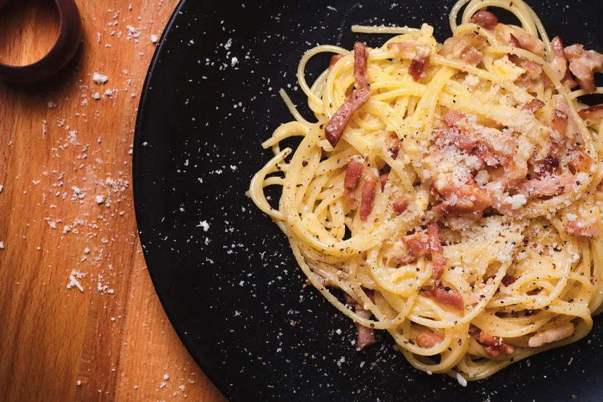

Spaghetti Carbonara

Description
Spaghetti Carbonara, an Italian classic, is a decadent pasta dish known for its creamy sauce and rich flavors. This dish features al dente spaghetti noodles tossed in a luxurious sauce made with eggs, Parmesan cheese, crispy pancetta or bacon, and freshly cracked black pepper. The heat from the cooked pasta and pancetta gently cooks the eggs, creating a creamy and velvety texture that coats each strand of spaghetti. The combination of savory pancetta, salty Parmesan cheese, and peppery notes from the black pepper provides a harmonious balance of flavors that is both indulgent and satisfying.
Served hot and garnished with additional grated Parmesan cheese and a sprinkle of freshly chopped parsley, Spaghetti Carbonara is a timeless favorite that evokes feelings of comfort and culinary delight. Whether enjoyed as a cozy dinner for two or served at a festive gathering, each forkful of this creamy pasta dish is a symphony of taste and texture that captivates the senses and leaves a lasting impression.
Ingredients
- Spaghetti pasta
- Pancetta or bacon
- Eggs
- Grated Parmesan cheese
- Olive oil
- Salt
- Black pepper
- Fresh parsley (for garnish)
Method
- Bring a large pot of salted water to a boil.
- Add spaghetti noodles to the boiling water and cook according to package instructions until al dente.
- While the pasta cooks, heat olive oil in a large skillet over medium heat.
- Add diced pancetta or bacon to the skillet and cook until crispy and browned, about 5-7 minutes.
- Remove the cooked pancetta from the skillet and set aside, leaving the rendered fat in the pan.
- In a mixing bowl, whisk together eggs, grated Parmesan cheese, and black pepper until well combined.
- Once the pasta is cooked, drain it, reserving about 1/2 cup of pasta water.
- Immediately add the hot drained pasta to the skillet with the rendered pancetta fat, tossing to coat.
- Remove the skillet from heat and quickly pour the egg and cheese mixture over the hot pasta, tossing vigorously to combine. The residual heat will cook the eggs and create a creamy sauce.
- If the sauce is too thick, gradually add some of the reserved pasta water until desired consistency is reached.
- Return the skillet to low heat if needed, stirring gently until the sauce thickens slightly and coats the pasta evenly.
- Serve the Spaghetti Carbonara hot, garnished with freshly chopped parsley and additional grated Parmesan cheese.